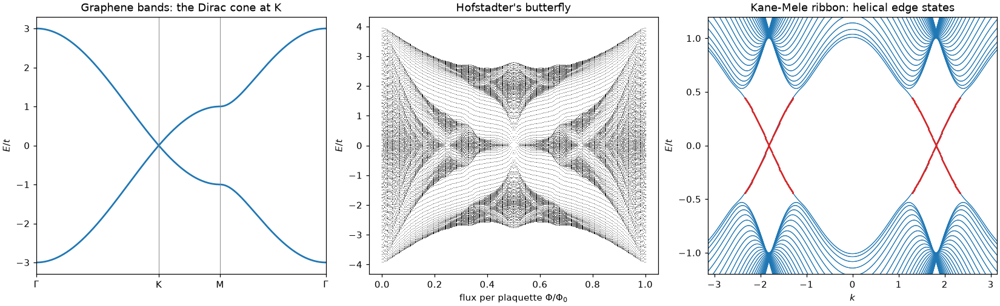
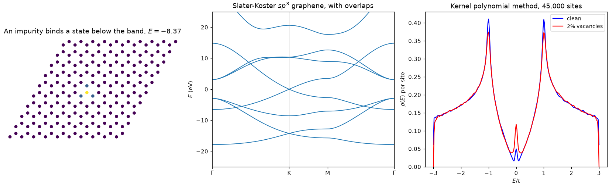
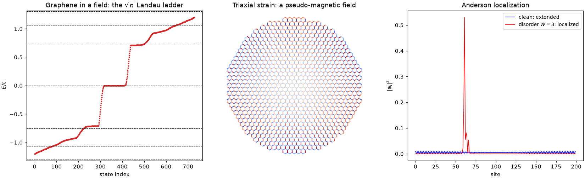
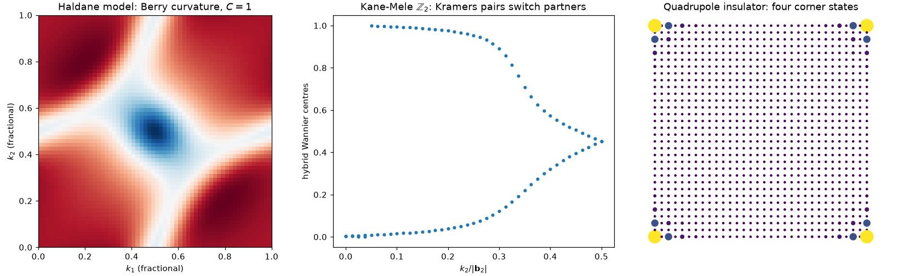
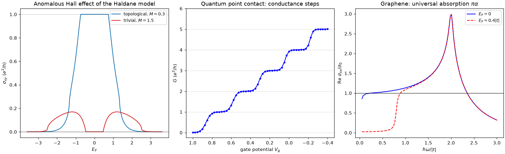
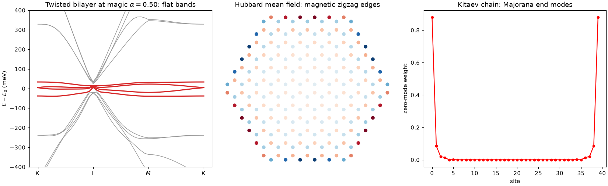
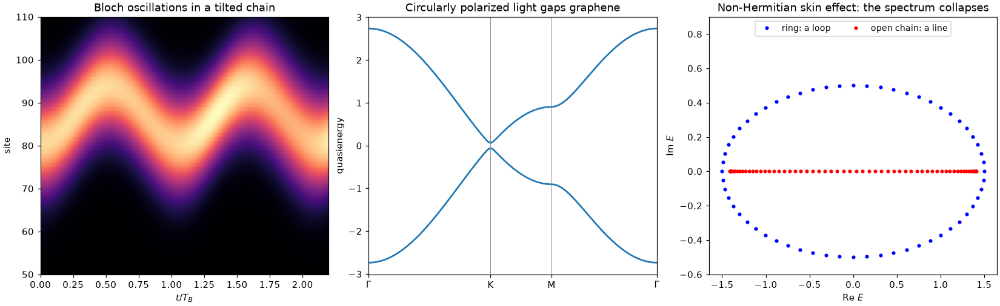

tbkit#
tbkit is a Python package to build and solve Tight-Binding models, written in fully vectorized NumPy. It’s built for physics students working through a textbook problem, curious learners exploring a topic on their own, and educators building a demonstration.


Start with the Tutorial, browse the example gallery, or jump straight to the API reference.
For computational physics beyond tight-binding – quantum mechanics,
classical mechanics, statistical physics, general relativity, and more
– see physicskit, whose
physicskit.condensed subpackage covers tight-binding band theory and
topology alongside superconductivity.
Examples#
Building and solving models#
Finite lattices, defects, several orbitals per site, real space to k-space and back, k·p models discretized into lattice models, saved models and Wannier90 imports, maximally localized Wannier functions, and solvers for very large lattices.


Fields, strain and disorder#
What happens to a lattice under a magnetic field (Peierls substitution), under strain, and with disorder.


Band topology#
Chern numbers, Berry phases, the Z2 invariant (and the four 3D indices), spin and mirror Chern numbers, the Bott index and entanglement spectrum, Weyl points and their chirality, Kitaev’s Majorana number, quantum geometry, symmetry classes, higher-order and 3D topological phases.


Response and transport#
Hall conductivities at any Fermi level (with the orbital magnetization, Nernst and thermal Hall responses), Landauer transport between leads, and linear and nonlinear optical response.


Flat bands and interactions#
Flat bands from lattice geometry and from a moiré twist, the Hubbard model in mean field, and superconductivity.


Driven and open systems#
Wavepacket dynamics, periodically driven (Floquet) lattices, and non-Hermitian bands with exceptional points.


Install#
To use tbkit:
Install Python 3.10 or later and three additional packages:
numpy
scipy
matplotlib
pip install tbkitorconda install -c conda-forge tbkit, orpip install -e .from a clone of the repository.
Examples are available at cpoli/tbkit, and rendered with their output in the example gallery.